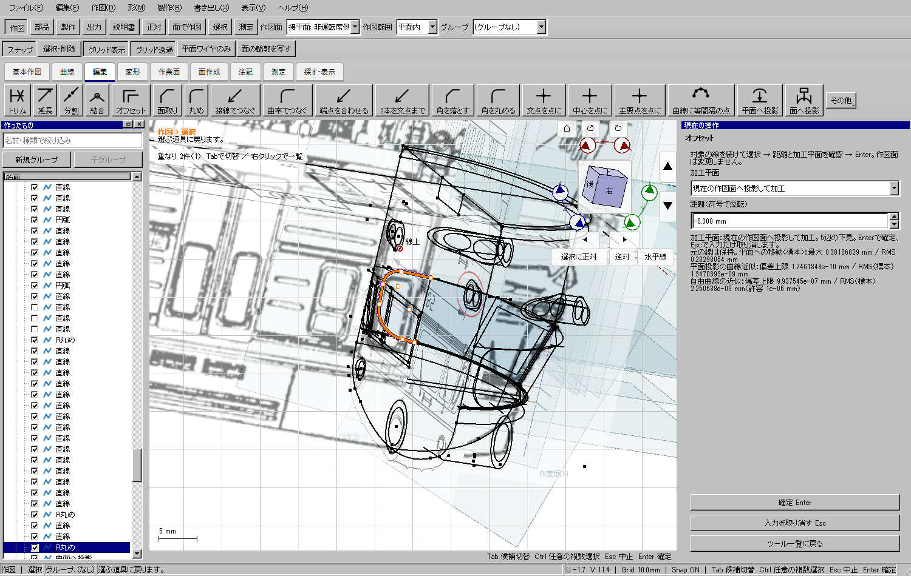

2026-11-20。面を指定して作図する際に、輪郭コピーを必須にせず元ワイヤを直接編集する。WP-04の厳密曲線区間と補正を先に重点検証して所有終了し、WP-08の私有UI・入力接続・操作回帰、検証総時間枠だけのWP-12へ順に所有を移した。保存形式と外部依存は変更していない。
| 問題 | 結果 |
|---|---|
| 接平面でオフセットを確定すると下見と異なる位置に生成 | 単独・複数入力の下見と確定を同じ投影・計算へ接続。円弧の平面投影が楕円になる場合も既存のネイティブ投影で曲線を保つ。移動量と近似偏差を表示し、入力が欠ける場合は部分確定しない。 |
| 曲線内部の分割がC/Rの別入力として数えられる | 滑らかな曲線単位で選択・入力欄・確定条件を統一。直線・鋭い角・不連続点を越えない。 |
| Bスプラインが分割・トリム・補正で拒否される | 厳密な区間を最大3曲線として抽出し、再フィットせず既存形式で保持する。数値で識別できない極短区間は空成功にせずGEO-C012で拒否。 |
| 接平面で選択なしの正対・逆対が使えない | 有効な面作図をコマンドとナビゲーターの有効条件へ接続。作図面・文書・未確定点を保全。 |
| プルダウン確定のEnterが形状まで確定する | プルダウン自身と親へ伝播したキーの所有を判定。ビューポートへ明示的に送った確定キーは維持。 |
初回のface-wire-edit-windows-20261120は、配布UI1073件まで失敗0で進んだが総上限1800秒へ到達し未完了となった。ログ・中断記録を保持し、旧結果を成功へ変更せず、総時間枠3600秒・個別進捗停止180秒の新しい固定ソースと設定で、全件を最初から再実行した。
重点UI67件、最終重点30件、保存更新後の共有ER1の追加3件が成功。最終30件には3Dポインターによる曲線の分割・トリム、元ワイヤを直接選ぶオフセット、取消、Undo/Redo、再読込を含む。コアのwire_editは54例、構造・診断台帳・UI配線・説明書の重点検証も成功。初期の失敗ログはout/offset-curve-edit-20261120へ保全した。
Windows全体ゲート face-wire-edit-windows-20261120b は成功。CTest 197件（skip 0）、開発UI 1091件・配布UI 1091件、従来版自己試験、ZIPから展開した配布物の通常起動2経路を確認した。実操作の証拠はWindows版へQtのマウス・キー入力を送った試験であり、OSレベルのComputer Use操作とは区別する。
共有原本を直接編集せず、out内の複製で試験した。調査中に保存元が更新されたため、更新後の複製でも3経路を再確認し、その複製取得前後・試験後の原本SHA256の一致を記録した。利用者の別CAD窓や原本を自動操作していない。
対象コミット 690d721631df8567a4086422c6734f3426d2be34。v0.1.0-20261120-update1 を公開し、最新タグ・対象コミット・ZIPサイズ 79808321 bytes・SHA256を照合した。SHA256: 01036f307b7003adf53087d76ecb7d3ba9d5d22fbd37e1f392c2f96f14b3e6ed。検証した同一ZIPを公開し、配布先は out/releases/face-wire-edit-windows-20261120b/package。全体証拠は out/verification/face-wire-edit-windows-20261120b/result.json、公開・通常起動の照合は out/offset-curve-edit-20261120。
